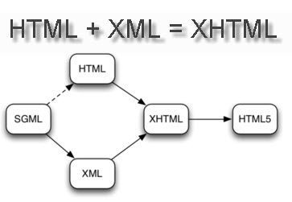
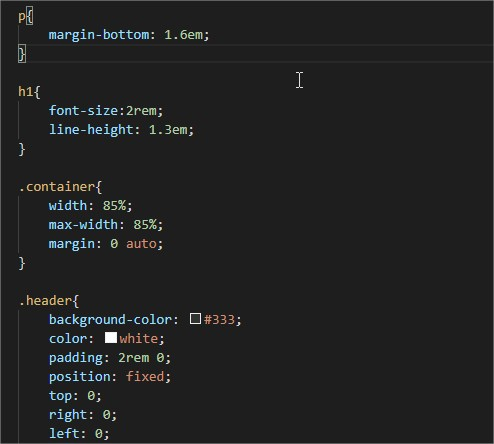
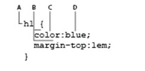

Práctica 4: Conceptos básicos de HTML, XHTML y CSS

En esta lección vamos a conocer los elementos básicos de dos lenguajes: HTML y CSS.
Aunque tienen distinta sintaxis y reglas, dependen fuertemente uno del otro.
Este tema es enormemente extenso y muchos de los principios básicos que se explican
aquí te enseñarán a crear sitios web de calidad con los medios disponibles en este
momento, al tiempo que te preparan para el futuro, al avanzar las nuevas
funcionalidades de HTML5.
Los documentos HTML (iniciales de Hypertext Markup Language) utilizan la extensión .htm o .html.
Esta extensión avisa al navegador web o a un dispositivo como un teléfono móvil, que en este archivo
hay contenido HTML y dicho contenido se restituye
en la ventana del navegador o la pantalla del dispositivo siguiendo las reglas del lenguaje HTML.
Las etiquetas se utilizan para definir el contenido de una página HTML. Estas etiquetas quedan enmarcadas dentro de los símbolos "menor que" (<) y "mayor que" (>) y se ponen al principio y al final de un objeto o texto utilizado en la página HTML. Aquí vemos un ejemplo de dos etiquetas de título con textos en ellas. Las etiquetas no se muestran en pantalla, pero todos los navegadores saben que el texto entre las etiquetas es un título de primer nivel:
"< h 1 >Welcome to Worldwide Apparel's intranet < / h1 >""
Hay una diferencia esencial entre HTML 4.0 y XHTML 1.0 – los dos estándares más recientes
publicados por el W3C (World Wide Web Consortium). Tal y como está definido el XHTML,
las páginas escritas en XHTML se pueden ver también en los navegadores que muestran las
páginas HTML actuales. Las etiquetas y atributos de XHTML y HTML siguen siendo las mismas,
pero la sintaxis del código XHTML es más estricta.
Las diferencias más importantes entre XHTML y HTML son estas:
- En XHTML, todas las etiquetas deben escribirse en minúsculas.
- XHTML exige que todas las etiquetas de apertura lleven su correspondiente etiqueta de cierre, es decir, siempre debe existir una etiqueta al principio y otra al final de cualquier elemento, sea un título, párrafo, imagen u otro.
- XHTML exige que el anidamiento de etiquetas (su inclusión unas dentro de otras), siga unas reglas estrictas. En el ejemplo siguiente, la etiqueta , que se utiliza para enfatizar un texto, se abre dentro de la etiqueta de título < h1 > Por tanto, tiene que cerrarse antes de que se cierre el elemento < h1 >
Uno de los conceptos más importantes que debemos dominar a la hora de diseñar contenidos web es la estructura anidada de los documentos HTML. Los elementos suelen presentarse contenidos unos dentro de otros. Por lo general tenemos que empezar por diseñar la estructura HTML de la página para después continuar con los estilos, aplicando CSS.
Para colocar imágenes dentro de un documento HTML se utiliza la etiqueta
< img src="images/familysitting.jpg" / >
Esta línea le indica al navegador que busque dentro de la carpeta images y presente en pantalla el archivo familysitting.jpg. En los pasos siguientes debemos asegurarnos de que se mantiene el espacio en blanco de separación entre la comilla y el cierre de la etiqueta. Ahora vamos a añadir un atributo alt. El atributo alt representa el texto alternativo a la imagen, y es obligatorio añadirlo para mantener la validez de la página. Este atributo es muy útil para las personas que utilizan sistemas de lectura de pantalla para navegar por la Web, ya que permite convertir a voz el texto indicado como valor. También sirve para dar un contenido al espacio vacío que se genera cuando, por cualquier razón, la imagen no se puede representar (porque el enlace está roto o el archivo tiene un formato incorrecto, por ejemplo).
CSS (Cascading Style Sheets) utiliza un lenguaje distinto de HTML. CSS nos permite aplicar estilos de manera coherente a los distintos elementos de las páginas del sitio web, de modo que los títulos, listas y párrafos pueden verse igual en todas y cada una de las páginas.

Antes de que empecemos a trabajar con CSS es preciso aclarar cómo vamos a denominar a las distintas partes de la sintaxis de CSS en este libro. No es cosa fácil dicho así, porque ocurre que hay diferencias entre la especificación oficial del lenguaje CSS y la forma en que los diseñadores se refieren a CSS en el mundo real. En cualquier caso, los conceptos básicos son estos: el siguiente código es lo que conocemos como una regla de CSS:

Los componentes de esta regla son:
A. Selector. B. Declaración. C. Propiedad. D.Valor.
Los selectores de etiqueta se utilizan con mucha frecuencia, pero solo se pueden aplicar a elementos HTML. Cuando lo que queremos es modificar el estilo de alguna cosa que no coincide exactamente con una etiqueta, por ejemplo cambiar el color de una única palabra dentro de un párrafo, el selector de etiqueta no es una buena opción (e incluso en algunas ocasiones resulta imposible de aplicar). En este caso podemos utilizar el selector de clase, que es una regla CSS que se puede aplicar a cualquier elemento dentro de una página. Los selectores de clase tienen unas opciones de nomenclatura flexibles, pero es muy conveniente utilizar nombres que describan adecuadamente lo que hacen. Por ejemplo, podemos crear selectores de clase como .caption, .imageborder, o .redtext. En este ejercicio vamos a crear un estilo de clase que aplica color rojo a las palabras Worldwide Apparel en un párrafo.
Cuando utilizamos CSS para formatear textos para la web, disponemos de algunas opciones para establecer su tamaño y su grosor. La propiedad CSS que controla el tamaño del texto se llama font-size. Podemos modificar el valor de la propiedad font-size de varias formas:
- Tamaño absoluto: se trata de una serie de palabras clave que indican tamaños predefinidos de letra. Los tamaños nominados escalan de acuerdo con las preferencias del usuario con respecto a la letra. Los valores posibles xx-small, x-small, small, medium, large, x-large y xx-large.
- Longitud: Es un número seguido de un indicador del sistema de medida (cm, mm, in, pt, o pc) o bien un de unidades relativas (em, ex, o px).
- Porcentaje: Un entero seguido del signo de porcentaje (%). El valor es un tanto por ciento del tamaño de letra del objeto padre.
- Tamaño relativo: una serie de palabras clave que se interpretan como relativas al tamaño de letra del objeto padre. Los valores posibles son larger y smaller.
Una forma de resolver el problema del cambio de tamaño de los textos que causa el uso de pixels consiste en aplicar otras unidades de medida. Aquí vamos a establecer un cambio de tamaño fiable combinando el porcentaje y la unidad "em".
una de las razones más importantes para utilizar em como unidad de medida es que se adapta en el caso de que un usuario altere el tamaño del texto de su navegador. Podemos simular este efecto si aumentamos el tamaño de la letra en el navegador. Por ejemplo, en Internet Explorer 9 podemos ir a la opción View de la barra de menú, seleccionar "Text Size" y elegir entre unas cuantas opciones. Podrás ver que el texto reacciona bien a este cambio de escala. Cuando termines asegúrate de que vuelves a dejar el tamaño del texto en el valor por defecto. Muchos navegadores tienen un comando que permite hacer esto.
El problema que nos plantea el cambio de tamaño del texto en los navegadores es algo más complicado, ya que algunos utilizan la función "zoom" que aumenta o reduce la escala de toda la página. Los navegadores que disponen de zoom pueden tener, además, una opción aparte para variar solo el tamaño de la letra. Otra de las ventajas de utilizar ems tiene que ver con la relación de escala entre todos los elementos que utilizan esta unidad de medida.
1.- ¿Que es un XML y para que sirve?
XML (Extensible Markup Language) es un lenguaje de etiquetas, es decir, cada paquete de información está delimitado por dos etiquetas como se hace también en el lenguaje HTML, pero XML separa el contenido de la presentación.
XML se plantea como un lenguaje estándar para el intercambio de información entre diferentes programas de una manera segura, fiable y libre, ya que no pertenece a ninguna compañía
2.- ¿Que caracteristicas tiene un documento HTML?
Información contextual de la página, referencia a otros ficheros y por último Scripts y estilos
3.- ¿Que es y para que sirve un archivo XHTML?.
A partir de un documento en XML se pueden generar archivos PDF y en otros formatos. De esta forma, la información puede ser presentada de una manera visual para su lectura por las personas y el XML sólo quedaría para ser entendido por los programas; aunque si hacemos un esfuerzo, vemos que es fácil para una persona extraer la información de un documento XML directamente.
Conclusiones
Edson Asael Corona EncinaEn esta práctica se ven los principales conceptos de la programación web, que son HTML, CSS y XHTML, los dos primeros son dependientes entre si ya que html contiene la estructura del documento, las referencias y el contenido, mientras que CSS contiene toda la información del estilo y el acomodo de los objetos en una página web y XHTML separa contenido de HTML para hacerlo mas entendible a otros programas. En conjunto los tres son importantes de aprender, especialmente CSS ya que una web depende mucho del diseño y que sea llamativa para capturar la atención del cliente o interesados en algún diseño de página.